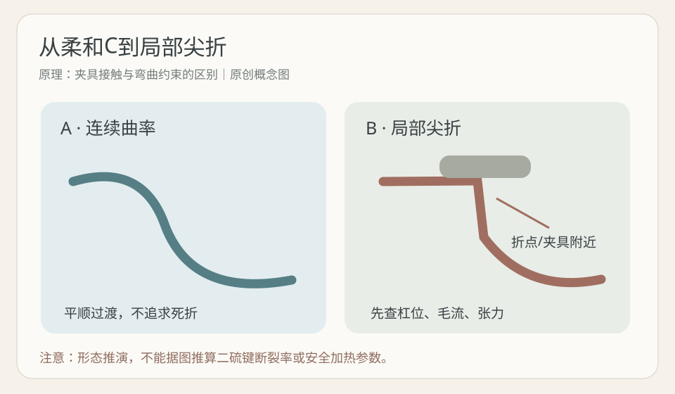
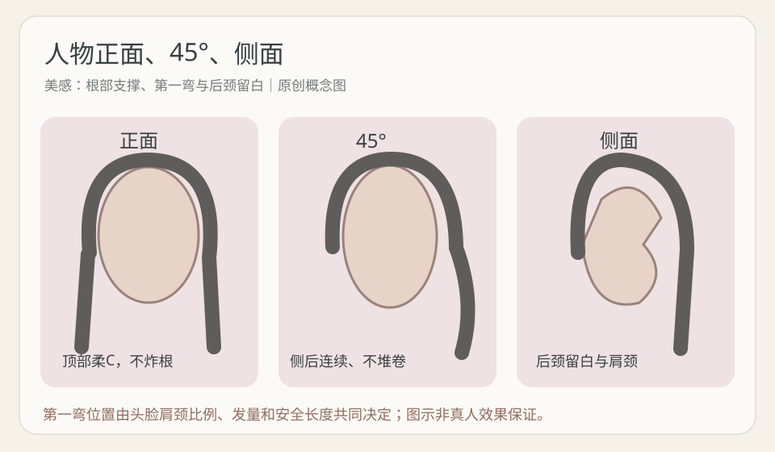
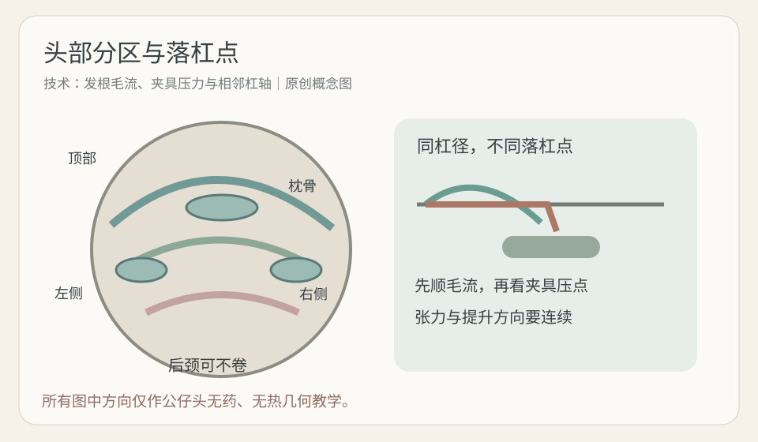

2026-10-29
【今日核心问题】烫后发根出现明显硬折线，如何先区分卷杠机械尖折与毛发结构性异常，而不是立即追加药剂？承接10月28日冷热烫交付状态，今天新增“连续曲率与局部尖折分开分析”的能力。
【结构】毛鳞片位于外层，参与保护、摩擦和物质传递；皮质层的角蛋白中间丝和相关基质参与拉伸、弯曲、弹性与恢复。二硫键为重要共价交联，与较持久形状相关；氢键受水分影响参与暂时塑形；盐键/离子相互作用及疏水作用也参与力学表现。局部外观不能直接证明某种键断裂百分比。
【机械几何】发根毛流与杠轴突然冲突、夹具压在曲线转折处、落杠点不平稳、张力局部增大，都可能造成“几何尖折”这一观察假设。需要用无药无热排杠对照验证，而不能宣称是已测定的唯一成因。平顺C曲线与根部一条直角式硬折，虽然都改变形态，却不是同样自然的设计语言。
【还原—卷绕—氧化】厂家允许的TGA及其他还原体系，在特定浓度、pH、温度、时间和发质条件下改变部分可接近的二硫键。CA若为门店产品简称，必须核对成分和相容性。相同pH不等于同药力，“软化60%”不等于已测断键60%。卷杠的发片厚度、杠径、提升角、张力、圈数和毛流，是独立的几何约束；氧化参与部分交联重新形成，但不能消除夹具造成的尖折，也不是修复断发的药。
【水热干燥】水分改变部分氢键网络与角蛋白基质塑化，涉及结构松弛、黏弹性和玻璃化相关概念；实验室玻璃化转变不能直接换算成热烫温度。受控热会影响水分迁移和形变，过度热暴露可能损伤；机器设定值不等于发丝内部温度。干燥和轻吹影响暂时性相互作用与外观，因此要观察自然干、轻吹、复湿后曲线，而非只看烫好照片。
【安全边界】新生健康区、染后区和旧漂区可能有不同恢复表现。旧漂发尾若湿态失弹、发黏、断丝或头皮明显刺激，停止进一步化学/热处理；保护护理不等于恢复烫发耐受。将“局部尖折、卷度持续性、毛束毛躁、异常断丝”分别记录，不用一个现象解释所有问题。

【近7天】优先核查2026-10-22至29日研究，未核验到直接为真人发根夹具、落杠点和安全张力提供数值阈值的新高质量对照试验；本课不虚构新论文。用3项可核验研究解释边界，并把操作几何另列为教学假设。
【来源一】Breakspear等《Chemical bonds and hair behaviour—A review》，2024-05-11首次发表，International Journal of Cosmetic Science，科学综述。核心结论：二硫键、氢键、离子及疏水相互作用共同影响毛发行为。证据强度中，机制综述但非烫根对照；能支持不以单一化学键解释折痕；不能证明哪种夹具点位安全。
【来源二】Ezawa等《Stiffness of Human Hair Correlates with the Fractions of Cortical Cell Types》，2019-04-01，Cosmetics，原始弯曲材料实验，样本涉及156位受试者。核心结论：弯曲模量有个体差异并与皮质细胞类型组成相关。证据强度中，有实际材料测量但不研究烫发工具；能支持相似发径也不必然有相同受力；不能推导通用提升角。
【来源三】Togashi等《The swelling behaviour of hair studied through the structural change of keratin protein during the permanent waving treatment》，2024-11-30线上首发、2025刊载，Biophysical Chemistry，原始实验。核心结论：受控还原及氧化影响毛发内部结构和膨润行为。证据强度中，有仪器结果但非门店真人；能支持外表手感不能代表内部反应；不能证明某处根折来自“软化过度”，也不能给出设备安全温度。
【证据分层】科研解释毛发结构、材料力学；厂家技术说明决定化学品、时间、冷却、氧化等；本课的角度、杠径属于公仔头教学候选；门店经验应做对照记录，不直接覆盖原制度。
【模拟教学案例·非真实顾客】顾客32岁，喜知性利落。脸为较长椭圆偏方、额头略高、颧骨略突出、下颌角不明显；顶部略平、后枕偏平、颈部中等偏短、肩宽中等。发长锁骨下5厘米，原有中低层次、下摆较厚。顶部中等密度、发径细软，两侧中等，后枕发量多且粗硬，后颈毛流向上，右额角毛流向后上方。天然发尾略外翻。新生约7厘米，中段一年染棕两次，发尾3—4厘米旧漂再染暗；漂段耐受未证实。顾客两天一洗，常把发别耳后，每天愿意花5分钟轻吹。
【目标与参考图】“头顶别塌、但不能炸；自然、不要太卷、显脸小。”参考图是吹整后顶部轻C、下颌以下第一弯、锁骨松S、后颈清爽，不能保证自然干等同照片。
【模拟问题】顶部发根一侧出现明显硬折，发中大S还在；可能有夹具压点记录，但没有实际皮质测量。不能直接宣布药力过高或二剂失败。最大风险是为了抹平折痕，对旧漂段追加药剂、反复加热或强行拉直。
【现场诊断】先拍正面、45度、侧面和分缝根部；回看杠体落点、夹具压点、天然毛流、提升角、发片厚度、张力、是否局部折回以及厂家药剂/设备记录；同时记录湿态轻微伸长后的恢复、发黏、断丝与头皮刺激。若异常损伤立即停止，不做真人补烫实验。
【剪裁】顶部只保留必要支撑，不以高层次无限增高；耳前保留密度，脸周下颌下方连接柔弯；侧后中低层次释放重量，后枕微补圆、短颈后颈留白。若旧漂发尾不能安全参与处理，缩短有效造型段，双S改柔C或配合温和轻吹，不强求照片卷数。
【药剂与软化】先按新生、染后、漂后及顶/侧/枕/颈交叉分区。仅选择厂家明确适用且与冷/热设备、二剂完全兼容的TGA或其他系统。没有指定产品说明，本课不编造pH、浓度、具体涂放顺序、分钟数和终点百分比。现场观察均匀状态、异常失弹发黏/断丝和头皮耐受，绝不以一条硬折判断内部断键率。药剂涂放、冲水、加热、冷却、氧化必须按真实标签。
【冲水与排杠】按说明充分冲水，记录持续滴水、均匀湿润、局部偏干等观察等级（不是精确含水率）；发片平整薄铺、尾纸顺，张力温和稳定。先顺根部毛流选择落杠点，再根据安全有效长确定杠径、提升角和圈数。不能强拉旧漂发尾。
【热/干燥/氧化】具体热设定、停留时间、干燥与冷却按厂家完整流程，不可跨冷热烫套用；屏幕温度不是发芯温度，灼热、刺激、发黏或断丝即停止。配套氧化不是折痕修复剂。
【成品与补救】理想为顶部连续柔C、不出现死折；下颌柔弯、锁骨松S，45度侧后连贯，短颈后颈清爽。分别展示自然干与固定5分钟轻吹；若还有硬折，优先讨论分缝调整、局部修剪、非高热整理及可接受的预期，不默认补药补热，也不保证立即消失。
【人物八步】风格=知性自然；人物=长椭圆偏方脸、平顶、短颈、中肩；长度=安全有效段优先；特点=顶部连续柔C不炸根；层次=低至中低，后枕微释放；刘海=顺分缝轻柔/不卷；卷度=下颌下第一弯、锁骨附近最明显大S；打理=自然干与五分钟轻吹分开交付。
【正面】脸偏长不代表顶部越高越好；只需要有限支撑，额角毛流后上方应避免逆向拉折。颧骨最突处避免最大横向蓬松，柔弯可从下颌以下开始；少发量要保住底线。
【45度】从额角、太阳穴、耳后至枕骨看连续性，夹具折痕在这一角度可能更容易识别。右额角与左侧天然毛流不同，可以有不同卷向，不追求机械镜像。
【侧面】后枕偏平可补微圆，后颈向上毛流不强拉，短颈肩颈交界不要卷团压重。长颈、窄肩、脸更长或发量稀的人物应重设体积，不存在唯一脸型/杠径答案。

【图一·原创原理】连续C与局部尖折对照；看曲率是否突然改变，以及夹具压点假设。只是抽象示意，不是显微损伤证据。
【图二·原创技术】顶部、枕骨、两侧、后颈和落杠位置；看顺自然毛流、薄片贴杠、提升角及夹具接触，方向不代表药剂涂放。
【图三·原创美感】正面、45度、侧面人物轮廓；看顶部轻C不过高、下颌首弯、颧骨旁体积、后枕与后颈留白。原创SVG不含真实顾客或实验结果。
【教学限制】只做公仔头无药无热的机械排杠。杠径为外径，提升角以当地头皮切线为0°；以下属于几何候选，非真人操作配方。圈数依有效发长与第一弯而变化，不规定所有法式烫统一圈数。
【顶部】外径候选28—34mm、提升20—40°，目标连续轻C、根部不被夹具压成尖角。落杠应与毛流平顺衔接，张力温和，不因想蓬就越拉越紧。压根查夹具位置，炸根查毛流和过度提升。
【枕骨】外径26—32mm、提升20—40°，连接顶部与侧后，厚片拆成能贴杠的薄片、杠轴逐渐过渡；避免多条最强弯度集中在一个横向高度。
【两侧】外径30—36mm、提升10—30°，下颌下第一弯接锁骨松S；右额角毛流向后，不用左右强行镜像。尾纸平顺，避免发尾回折、局部强张力。
【后颈】本案例后颈毛流向上、颈短，可以不卷；如公仔头练轻C，候选0—15°低提升，控制根部方向及肩颈卷团。
【刘海脸周】依据额头、分缝、有效长度选不卷或柔C；细软碎发不要强拉。最大卷度与第一弯可在不同高度，颧骨附近避免突鼓。
【纠错】压根查杠位夹具；炸根查提升与毛流；折痕查局部压点、尾纸与张力突变；尾翘查天然毛流；断层查第一弯高度；流向冲突查相邻杠轴；后颈堆积查层次重量与过多圈数。异常断丝/失弹先停止高风险处理，不能用补药补热解决几何问题。

【先问五个问题】①“你说蓬松，是分缝不要贴，还是需要明显增高？”②“不要太卷，是不喜欢小卷，还是连顶部也只要一点柔C？”③“显脸小最想调整额角、颧骨、下颌还是耳后？”④“近两年哪些位置漂染烫和夹板，是否有发黏、断丝？”⑤“参考图是自然干还是吹整，你每日愿意花几分钟？”
【模拟门店对话】顾客：“上次头顶烫出一条硬折，这次想更蓬又不要折。”发型师：“我们先查它是不是夹具压点、落杠方向和毛流的几何问题，也观察有无断丝；单看折线不能断定药水过强或太弱。”顾客：“换强药或者粗杠不就好了？”发型师：“粗杠同样可能压出折痕，强药也不能修正夹具。我们先设计顶部连续轻C，下颌以下第一弯，后颈清爽，旧漂段不强做。”顾客：“洗完像照片吗？”发型师：“照片经过吹整，先把自然干与五分钟轻吹两种交付效果区分清楚。”
【可复制话术】“发根自然蓬松要的是连续柔C，不是被夹出一条硬折。我们会先看毛流、落杠点、夹具、发质和漂染史，避免把机械问题当作药力问题。完成以后从正面、45度、侧面复查，并给你演示五分钟轻吹，安全和自然比例优先。”
【先练后看】虚构A、B两组同材质公仔头毛束：A顺毛流卷出连续C；B同杠径、同样无药无热，但夹具位于局部折点，出现硬折。另有C旧漂发尾湿态异常拉长不回弹。问题：①A与B哪个更符合自然发根？②能从B直接断言pH过高或二剂失败吗？③至少核对哪些几何因素？④可以给C直接补热压直吗？⑤长脸平顶短颈的设计怎么安排？
【答案一】A更接近自然、连续的柔C。B的尖折不是“卷更弹”的证明；无药练习只说明几何外观，不能代表真人化学结果。
【答案二】不能。需要实际药剂、加热、氧化、毛发历史和异常损伤检查，单凭折痕没有断键率证据。
【答案三】原生毛流、落杠点、夹具压点、提升角与方向、发片厚薄和张力是否均匀，再看尾纸与相邻杠轴。
【答案四】不能。异常伸长不回弹或断丝是停止进一步化学热处理的信号，先讨论安全剪裁与温和造型替代。
【答案五】顶部有限轻C避免拉长脸，最大外扩点不要压在颧骨最高处，下颌以下第一弯，锁骨松S，45度侧后连续、侧面后颈留白；不同发量肩宽可调整。
【完整路径】化学历史与安全→辨识局部尖折和连续曲线→毛流/夹具/厚度/张力→人物三视角→无热单变量公仔头→必要时才依据厂家相容技术完成处理→自然干、洗后复核。
【实验目的】用离体毛束比较“夹具接触点位”是否影响局部折线外观。只研究无药无热机械形态，不是二硫键、热损伤或真人安全实验。
【材料】同来源、同长度与化学历史、预弯程度相近毛束8束，每组4束；同规格软杠、同型号软夹、清水、统一吸水纸、固定刻度背景、手机、计时器和温湿度计。
【唯一主动变量】A组夹具接触点位于曲线平缓处；B组位于转折附近。控制毛束、杠径、卷入方向与圈数、起始湿度、张力、夹具压紧程度、夹持时长、拍摄位置。若夹具压力不能一致，应明示因果限制。
【步骤】①A01—A04、B01—B04编号拍基线；②同温清水润湿及统一吸水；③无药无热按相同方向轻卷并放置夹具，不强拉；④5分钟和30分钟解除夹具，固定机位记录折线等级和局部弯度；⑤自然干及24小时再次观察；⑥统一清水复湿后自然干，重复两轮并交叉交换部分毛束的夹点；⑦保留零变化、异常和断丝记录。
【空白记录表】样本｜夹点位置｜初始弯度｜解除时折线0—3级｜自然干折线｜24小时｜二次复湿后｜异常；A01—A04、B01—B04全部待测。0无明显折线、3严重只是门店自定义观察级别，实验尚未进行，不填写虚假结果。
【门店标准】重复结果稳定才把“顺毛流、夹具点位、自然干根部弧度”加进公仔头练习核查表；若无差异要保留。绝不能外推具体药水pH、加热温度、二剂时长或人体安全阈值。
【一个原理】发根局部尖折与连续C卷是两种不同形态，必须先核对毛流、落杠点、夹具和张力，并排除结构性损伤。
【一个错误】看到硬折就判定软化过度或药力不足，直接追加还原、加热或强拉直。
【下次重点观察】同公仔头同杠径保持其他条件不变，仅换夹具接触点，观察解除夹具、自然干和24小时的根部曲线。